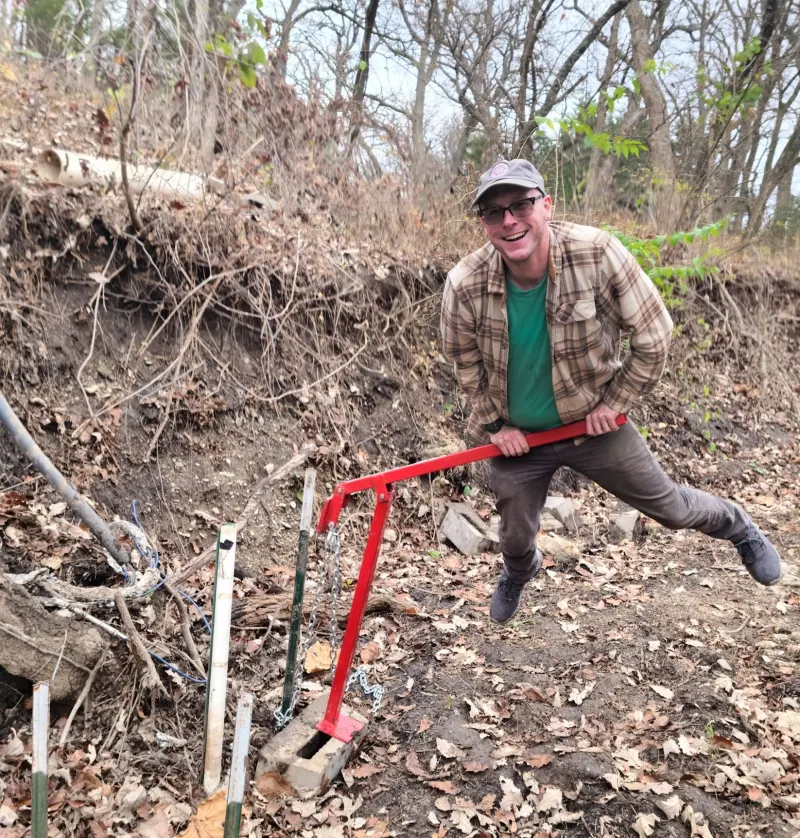
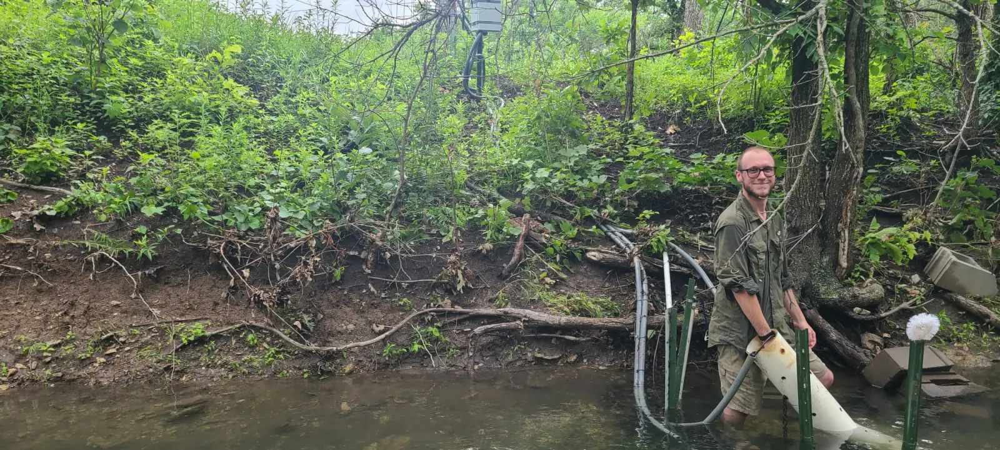

Connor Brown

I am a PhD Candidate at the Kansas Geological Survey and Department of Geology at the University of Kansas in Dr. Erin Seybold’s lab, where I study ecosystem ecology and biogeochemical cycling in non-perennial streams as part of the Aquatic Intermittency Effects on Microbiomes in Streams (AIMS) project.
I previously completed an M.S. in Biology at Sam Houston State University, where I worked with Dr. Amber Ulseth on linking land use and precipitation regime changes to stream metabolism in subtropical Texas coastal streams. Before that, I earned a B.S. in Natural Resource Management (Fisheries and Aquatic Biology) at Texas Tech University, working with Dr. Allison Pease and Dr. Kelbi Delaune on Pecos River macroinvertebrate communities.
My research focuses on carbon cycling in non-perennial streams. I am broadly interested in stream ecosystem ecology, hydrology, biogeochemistry, and data science.
